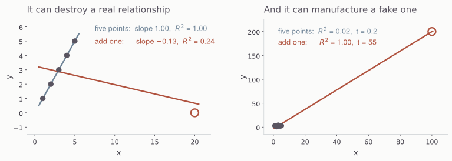
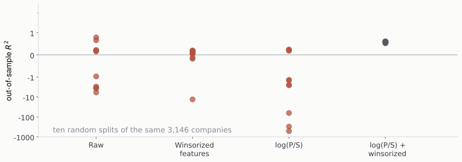

Thu Sep 3, 2026
Today’s data, 4161 rows.
| Multiples | ps, pb, pe, evebitda |
| Denominators | revenue, book value, net income, EBITDA |
| Industry variables | SIC4, SIC3, SIC2, industry, famaindustry, sector |
| Ratios | net margin, gross margin, EBITDA margin, asset turnover, ROE, ROA, ROIC, debt-to-equity, current ratio, payout ratio, dividend yield |
| Growth | year-over-year sales growth |
| Size | marketcap |
Ask AI to describe session4.parquet and confirm that it contains this data.
Including industry dummy variables (1 if in industry, 0 if not, for each industry) allows the intercept of the regression to vary by industry.
Ask AI what industry variable it recommends using. Then ask it to run the regression with statsmodels and to evaluate the goodness of fit.

Six points either way, and least squares has no way of telling you which of these two pictures it is looking at. It reports the same kind of R-squared for both.
| x | 1 | 2 | 3 | 4 | 5 | 20 | |
|---|---|---|---|---|---|---|---|
| y | 1 | 2 | 3 | 4 | 5 | 0 |
Five points
Slope 1.00, R-squared 1.00. A perfect line.
Add the sixth
Slope -0.13, R-squared 0.24. The sign is now wrong.
| x | 1 | 2 | 3 | 4 | 5 | 100 | |
|---|---|---|---|---|---|---|---|
| y | 3 | 1 | 4 | 2 | 3 | 200 |
Five points of noise
R-squared 0.019, t = 0.24. Correctly, nothing.
Add the sixth
R-squared 0.999, t = 55. A perfect fit through one observation.
Six points here, and a few thousand in the file. It does not take many.
Winsorize
Clip each variable at its 1st and 99th percentile. Keeps the company, discards the magnitude.
Standardize
Subtract the mean, divide by the standard deviation. Puts every variable on the same scale.
Log
Take logs. Converts right-skewed distributions (marketcap, household income, …) into more symmetric ones.
They are not interchangeable, and only two of the three will do anything to an OLS R-squared.
| values | mean | std | |
|---|---|---|---|
| Raw | 1, 2, 3, 4, 1000 | 202.0 | 446.1 |
| Clipped at 4 | 1, 2, 3, 4, 4 | 2.8 | 1.3 |
The company stays in the sample and keeps its rank. What it loses is the ability to dominate a sum of squares. Winsorizing is a statement that you believe the ordering and not the size.
| values | |
|---|---|
| Raw | 1, 2, 3, 4, 1000 |
| Log | 0.00, 0.69, 1.10, 1.39, 6.91 |
A thousand is a thousand times the smallest value and seven times its log. Taking logs is useful for right-skewed variables.
| values | mean | std | |
|---|---|---|---|
| Raw | ninety-nine 0.5s, and one 3374 | 34.2 | 335.7 |
| Standardized | ninety-nine -0.1005s, and one 9.95 | 0.0 | 1.0 |
Standardizing is a linear change of variables, and OLS is invariant to it. The coefficients move and are easier to compare across variables, but the predictions of the dependent variable do not change.
Talk with AI about which transformations might be useful for which variables. Then re-run the regression.
How do coefficients, t-stats, and the R-squared change?
Machine learning deals with the following type of situation.
What machine learning cares about is how well a model trained (fitted) on past data will perform on future data. This is out-of-sample performance, because the future x’s and y are not part of the sample used to build the model.
To assess expected out-of-sample performance, we withhold some of our current data when training. We use the held-out data to test the model.

A negative out-of-sample R-squared is worse than predicting the mean. Log the multiple and winsorize the features, and the ten splits stop disagreeing.
Can we trade on this? Use session4_monthly.parquet. In each row, everything except the return is known at the beginning of the month.
Be prepared to present on Tuesday — slides if you want them but be prepared to dig into the analysis.
MGMT 638 · Gen AI and Quantitative Investments